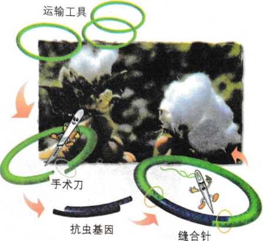
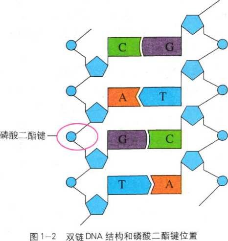
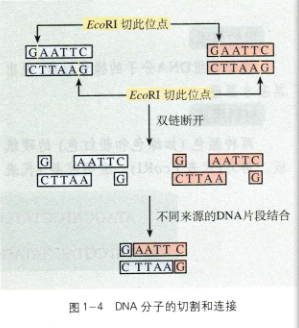
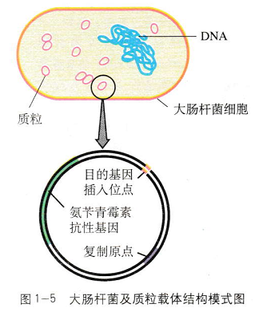

1.1 DNA重组技术的基本工具
“工欲善其事，必先利其器”。我国拥有自主知识产权的转基因抗虫棉，就是通过精心设计，用“分子工具”构建成的。培育抗虫棉首先要在体外对含有抗虫基因的DNA分子进行“切割”、改造、修饰和“拼接”，然后，导入棉花体细胞内，并使重组DNA在细胞中表达。实现这一精确的操作过程至少需要三种工具，即准确切割DNA的“手术刀”、将DNA片段再连接起来的“缝合针”将体外重组好的DNA导入受体细胞的“运输工具”。科学家已经找到并运用了这三种必需的工具，才使培育抗虫棉这一奇妙构想变成了现实（图1-1）。

限制性核酸内切酶——“分子手术刀”
切割DNA的工具是限制性核酸内切酶（restrictionen donucleases)，又称限制酶（restriction enzyme）。这类酶主要是从原核生物中分离纯化出来的。迄今已从近300种不同的微生物中分离出了约4000种限制酶。它们能够识别双链DNA分子的某种特定核苷酸序列，并且使每一条链中特定部位的两个核苷酸之间的磷酸二酯键（图1-2）断开。大多数限制酶的识别序列由6个核苷酸组成，例如，EcoRI、SmaI限制酶识别的序列均为6个核苷酸，也有少数限制酶的识别序列由4、5或8个核苷酸组成。DNA分子经限制酶切割产生的DNA片段末端通常有两种形式—黏性末端和平末端（图1-3）。当限制酶在它识别序列的中心轴线（图中虚线）两侧将DNA的两条链分别切开时，产生的是黏性末端，而当限制酶在它识别序列的中心轴线处切开时，产生的则是平末端。
DNA连接酶——“分子缝合针”
将切下来的DNA片段拼接成新的DNA分子，是靠DNA连接酶来完成的。1967年，世界上几个实验室几乎同时发现了一种能够将两条DNA链连接起来的酶，称之为DNA连接酶（DNA ligase）。根据酶的来源不同，可以将这些酶分为两类：一类是从大肠杆菌中分离得到的，称为E·coli DNA连接酶；另一类是从T4噬菌体中分离出来的，称为T4DNA连接酶。这两类酶都是将双链DNA片段“缝合”起来，恢复被限制酶切开的两个核苷酸之间的磷酸二酯键（图1-4），但这两种酶的作用有所差别：E·coli DNA连接酶只能将双链DNA片段互补的黏性末端之间连接起来，不能将双链DNA片段平末端之间进行连接。而T4DNA连接酶既可以“缝合”双链DNA片段互补的黏性末端，又可以“缝合”双链DNA片段的平末端，但连接平末端之间的效率比较低。

基因进入受体细胞的载体——“分子运输车”
用什么方法才能将外源基因送入细胞中呢？通常是利用质粒（plasmid）作为载体（vector），将基因送入细胞中。质粒是一种裸露的、结构简单、独立于细菌拟核DNA之外，并具有自我复制能力的很小的双链环状DNA分子。质粒DNA分子上有一个至多个限制酶切割位点，供外源DNA片段（基因）插入其中。携带外源DNA片段的质粒进入受体细胞后，在细胞中进行自我复制，或整合到染色体DNA上，随染色体DNA进行同步复制。质粒DNA分子上有特殊的标记基因，如四环素抗性基因、氨苄青霉素抗性基因等标记基因，供重组DNA的鉴定和选择（图1-5）。
在基因工程中使用的载体除质粒外，还有λ噬菌体的衍生物、动植物病毒等。它们来源不同，在大小、结构、复制以及插入片段大小上也有很大差别。这些基因工程载体的作用，就相当于一种运输工具，因此将它们比喻为“分子运输车”。
在进行基因工程操作中，真正被用作载体的质粒，都是在天然质粒的基础上进行过人工改造的。